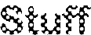
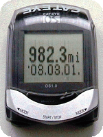

| Jim's Site | |

Last Updated: Wed Jun 09 14:25:28 BST 2004

I went out for a bike ride from Exeter on the 1st March 2003 and when I got back I was amazed to discover that, according to my Cycle Computer, I had achieved a maximum speed of 982.3 mph - apparently faster even than Andy Green managed in Thrust SSC when he set the previous World Record of 763.035 mph on 15th October 1997.
Unfortunately I'm unlikely to get this ratified as there was no official observer present at the time.
All information on this site is copyright © 1994-2020 Jim Randell